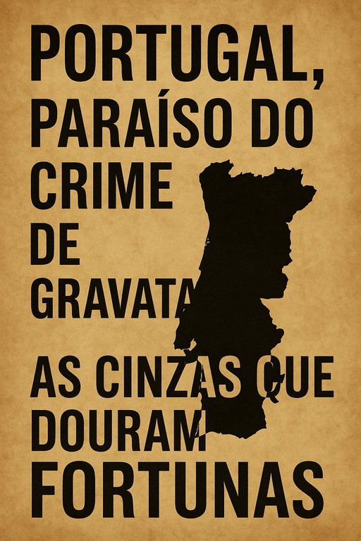

Publicado em 2025-05-29 17:53:17
Não é ficção. É Portugal. Aqui, até o fogo tem padrinhos e as cinzas têm contratos. É um país onde a floresta arde em agosto e o erário arde todo o ano. Onde as chamas consomem mato e milhões evaporam-se em adjudicações diretas, sempre com o mesmo perfume: o cheiro a “boy” queimado, mas não tocado.
- "PJ faz buscas na Força Aérea por suspeitas de esquemas no combate aos fogos."
Soa o alarme. 140 inspetores mobilizados. Uma multidão de magistrados. Os microfones apontados. As câmaras ligadas. Mas calma: é só o primeiro ato da encenação.
E como se diz em bom juridiquês: "Tudo dentro da normalidade democrática."
Em Portugal, há um último recurso garantido para as empresas em apuros: fazer negócios com o Estado, de preferência em tempo de calamidade.
Fogos? Epidemias? Tempestades? Toma lá:
E no fim, 100 milhões de euros desaparecem como fumo num pinhal em chamas.
Enquanto o povo se afoga em impostos e a floresta em labaredas, os verdadeiros pirómanos vestem fato e gravata. E ninguém lhes toca:
“A corrupção em Portugal não é um acidente. É um modelo de gestão pública.”
Sim, Portugal promete muito e entrega muito pouco. Mas há uma promessa que cumpre religiosamente: nenhum poderoso vai preso.
E é por isso que os investidores fogem, os jovens emigram, e a floresta continua a arder.
Portugal não precisa de bombeiros. Precisa de cidadãos que deixem de ser cinzas.
Artigo para publicação em "Fragmentos do Caos"
Autor: Augustus Veritas